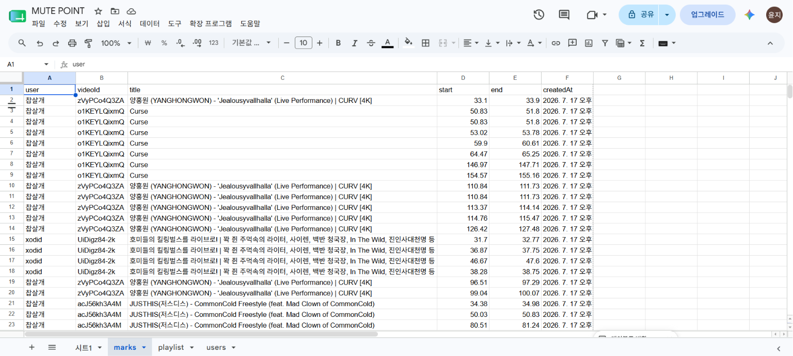

MUTE
뮤트 포인트
MUTE POINT
영남대학교 경영학과
22413031 송윤지
22413031 송윤지
01 / PROBLEM
부모님과 음악을 듣다 갑자기 흘러나온
욕설 가사, 그리고 찾아온 정적.
명곡이지만 차마 가족과 함께 듣기 민망한 비속어들.
매번 타이밍을 맞춰 볼륨을 줄이거나 다음 곡으로 넘기는 것은 피곤한 감정 노동입니다.
"이 불편한 뻘쭘함을 기술로 해결할 수는 없을까?"
02 / SOLUTION
단 한 번의 수동 필터링,
영구적인 클린 버전 자동 재생.
MUTE POINT는 사용자가 랩을 들으며 욕설 구간을 직접 'MUTE' 처리하는 웹 서비스입니다.
한 번만 타이밍을 기록해두면, 다음부터는 해당 구간이 자동으로 음소거되어 쾌적하게 감상할 수 있습니다.
더 이상 볼륨 조절에 신경 곤두세울 필요가 없습니다.
02-1 / DEMO
MUTE POINT 실제 작동 화면
(▶️ 영상의 재생 버튼을 누르면 실제 필터링되는 오디오를 확인하실 수 있습니다)
03 / DATABASE
구글 시트 백엔드 연동,
사용자별 맞춤 음소거 데이터 실시간 저장.

사용자가 직접 필터링한 구간은 구글 시트를 백엔드로 활용하여 실시간으로 기록됩니다.
user별 videoId와 start/end 타임스탬프가 데이터베이스에 구조적으로 저장되어, 재방문 시에도 즉시 쾌적한 감상 환경을 제공합니다.
THANK YOU
지금 바로 웹에 접속해서 나만의 클린 버전을 만들어보세요.